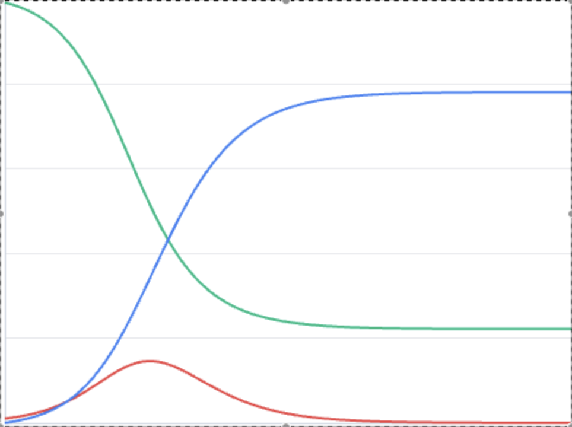
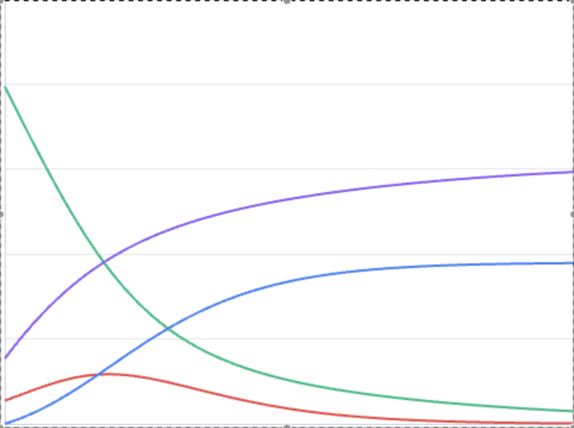

Modelle
Wähle ein Modell und erkunde die Dynamik.
-
S I R
SIR
Grundmodell ohne Latenz
 -
S E I R
SEIR
Mit Expositionsphase (Latenz)

-
S I S
SIS
Keine dauerhafte Immunität

-
S I R D
SIRD
Mit Todesfällen (Deceased)

-
S I R V
SIRV
Mit Impfkompartiment

Wenn man beschreiben möchte, wie sich Krankheiten ausbreiten, muss man die Wirklichkeit vereinfachen. Die echte Welt ist nämlich viel zu komplex, um alle winzigen Details zu berücksichtigen. Deshalb nutzen wir verschiedene Modelle – jedes konzentriert sich auf bestimmte Aspekte und hilft uns, diese besser zu verstehen.
Um die Ausbreitung von Infektionskrankheiten zu analysieren, wird die komplexe Realität in mathematischen Modellen vereinfacht. Diese Modelle bilden ausgewählte Faktoren ab und ermöglichen es, spezifische Fragestellungen gezielt zu untersuchen und zu vergleichen.